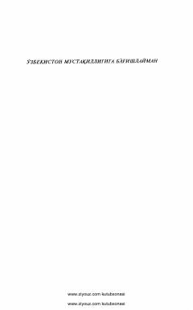

TRTurkistonda Rossiya imperiyasi hukmronligiga qarshi xalq ozodlik kurashlari tarixi.
Mazkur kitobda Turkiston o'lkasida Rossiya imperiyasining tajovuzkor siyosati, mustamlakachilik hukmronligi va unga qarshi xalqimizning olib borgan ozodlik kurashlari tarixi yoritilgan. Asar tarixiy manbalar asosida ilmiy tahlil qilingan bo'lib, o'lka xalqlarining milliy-ozodlik harakatlari haqida keng ma'lumot beradi.